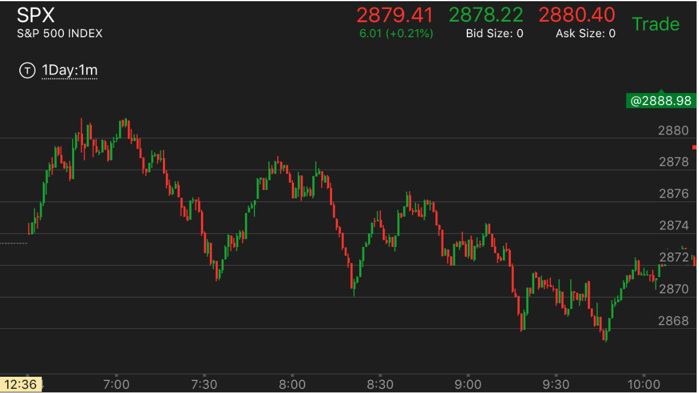
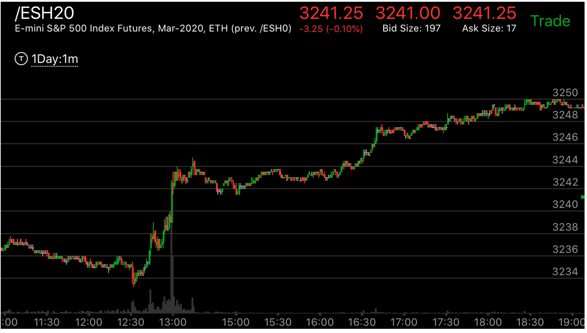
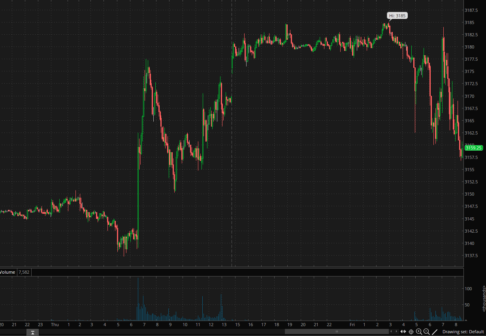
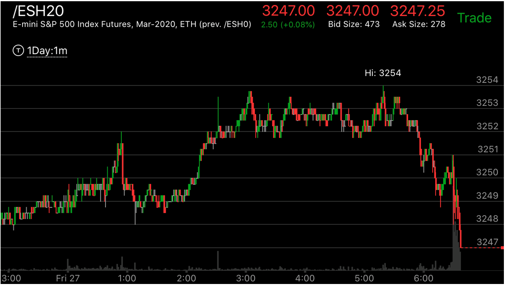

利用两段走势的各种变化来预测走势

图示：6：50的下跌，并没有出现两段走势，只有一浪，
在此之前，并没有明显的浪，然后它走平，开始反弹，可以想象，它会继续下跌。它拉回到原位后，
再次下跌，7：30才算第一浪。

图示：10：30是一个两段下跌。反弹后，拉回，是个很强的底部。
结果它在11：30很快走出了一个上涨的两段走势。再次反转。开始下跌趋势。

图示：开盘后，冲高，再次冲高。6：50从高点立刻下来，形成两段下跌。
但是它立刻冲高，两段下跌没有完成，反而创新高，在高点停留，这样就成了下跌的相对弱势。会下跌。

图示：13:00加速冲高后，出现了走平，但是它走平后，再次冲高，立刻拉回，
然后走平，然后加速走低。整个幅度才2个点，但是也形成了向下的两段走势。所以它会再次上涨。

图示：这个在高处立刻拉回，但是拉回的时候，出现了两段走势，或者完成走势。这样，再次上去的时候，
就不是一个完美形状，而且上去的速度很慢，所以会大大超过高点才对。而这个只是缓慢超过，这样不会反转，只会继续上涨。

图示：半夜1：00它冲高后，立刻拉回，但是它的拉回第一浪很大，第二浪很小。
不能是一个两段走势，3：00冲高后，它再次拉回，也没有出现下跌的两段走势，反而在5：00出现了新高，形成了下跌相对弱势。
这样就反转了。